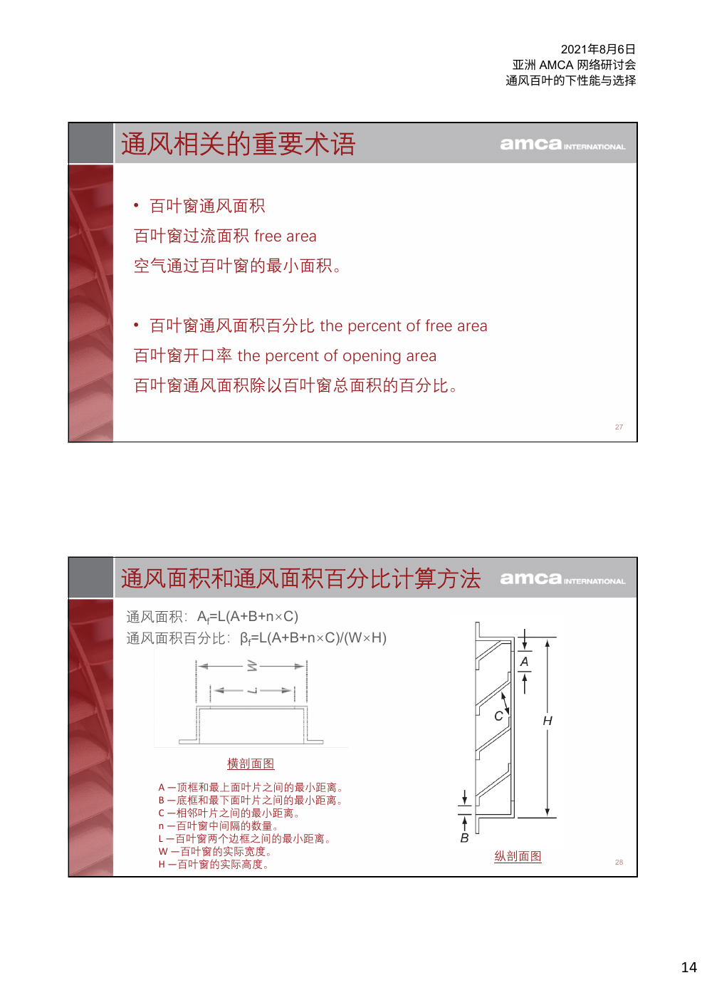
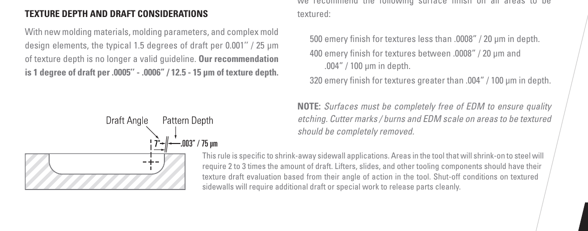
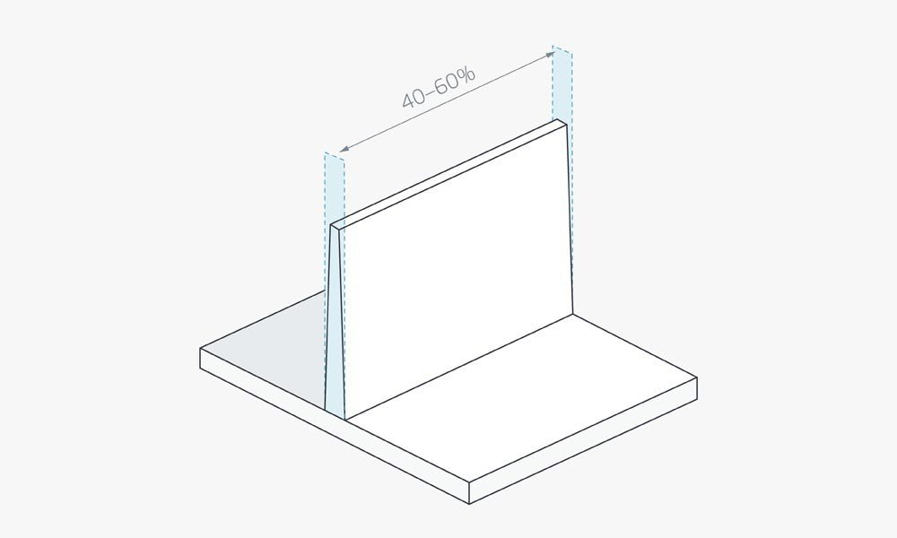

01
壳体与外观件
外壳拆分、外观件固定、壁厚/加强筋、开孔、覆面等「看得见的结构」。 本类共 10 篇。
开孔与网罩 3 篇

EMI 蜂窝波导通风板：孔径、深度与截止频率
蜂窝波导通风板用一排排短金属管来通风：孔格在截止频率以下像「截止波导」那样把电磁能量指数衰减掉，空气却还能从高开孔率的蜂窝里通过。屏蔽主要靠孔径（决定截止频率）和深度（决定衰减量），并且和风量对着干——孔越小、越深，屏蔽越好、风阻越大。它不是防雨百叶，也不能只用外壳上的薄孔来代替。

外壳散热通风口与防雨百叶：开孔率、进出风与滴水路径
产品外壳要散热又要挡雨，关键不是把孔开得看起来很多，而是空气真正能走的「自由面积」、进风与出风不要短路，以及叶片或疏水槽把水引走。几何开孔率不等于自由面积：AMCA 把自由面积定义为空气能通过的最小截面，还要扣掉叶片投影重叠；永锢给铝壳的进风孔、上下进出和 IP 分层，是面向工控盒、户外机柜这类产品外壳的做法，不能把大楼百叶的尺寸直接抄到消费电子上。

注塑喇叭网罩：开孔率、孔径孔距与脱模
外壳上的喇叭网罩要同时挡手、好看和让声音过去：决定听感的首先是开孔率，其次才是孔径、孔距和排布。SolidVents 把圆孔开孔率写成公式，并建议扬声器正前方做到 30%–40% 或更高；落到注塑件上，这些微孔要靠细型芯针成型，怡讯模具文指出孔径常见 0.5–1.5 mm，细针易弯、易短射、易粘模拉毛，要从模具钢材、排气、顶出和材料流动性一起解决。本篇不讨论网布加防水透声膜的声学叠层。
免工具外壳 1 篇
隐藏紧固 3 篇

PS5 免工具侧板与 DualSense 隐藏螺丝
PS5 两块白色外板「抬起再滑动」即可免工具取下，直接露出 M.2 扩展位、风扇和可吸尘的集尘口；DualSense 手柄则把 4 颗螺丝藏在可卡扣拆下的饰圈和 L1/R1 键下面，外观零可见螺丝。

塑料外壳止口与扣位：间隙参数与三个翻车案例
面壳与底壳之间用「止口」做精定位、用「扣位」做受力连接：东莞赫兹工业设计的结构工程师给出止口单边间隙 0.10–0.15 mm、扣位根部 R ≥ 0.5 倍壁厚等经验值，并用三个真实翻车（R 角太小断扣、忽略蠕变扣不紧、扣位间距过大中间鼓缝）说明每个参数的来历；B 站「鸿图教育」专栏补充了止口方向、面刮/底刮和模具侧（滑块/斜顶）的约束。

注塑螺丝柱（Boss 柱）：壁厚比 0.6 分水岭与自攻底孔公式
螺丝柱开裂和缩水是同一个问题的两面：柱壁厚与主壁厚之比约 0.6 是分水岭，偏薄锁螺丝就裂、偏厚外观面缩坑。赫兹工业设计给出 M2.5 自攻柱的整套经验值（柱壁 0.8–1.0 mm、外径 4.2–4.5 mm、底孔 = 螺丝外径 − 0.8 × 螺距 ≈ 2.0–2.1 mm、柱高 ≤ 3 × 外径、根部 R ≥ 0.25 mm、拔模 0.5–1°），并用一个手持设备改模实例验证：比例从 0.78 调到 0.55，裂纹消失。Protolabs、Eurotec 给出的壁厚比是 40%–60% / ≤ 50%。
分型与拔模 2 篇

咬花（晒纹）与拔模角：每 0.025 mm 纹深加 1°
外观件侧壁咬花后，纹路的凹凸会在脱模时「刮」侧壁，所以要按纹深加拔模角。赫兹工业设计的经验公式：基础 1–1.5° + 纹深 ÷ 0.025 mm × 1°，并提醒 VDI 3400 纹号对应的是 Ra，不是深度（实际峰谷深度约为 Ra 的 4–6 倍）；纹理厂 Mold-Tech 则在技术数据表里写明旧规则「每 25 µm 纹深 1.5°」已不再适用，推荐每 12.5–15 µm 纹深 1°，且包紧钢料的面要 2–3 倍。
塑料外壳止口与扣位：间隙参数与三个翻车案例
面壳与底壳之间用「止口」做精定位、用「扣位」做受力连接：东莞赫兹工业设计的结构工程师给出止口单边间隙 0.10–0.15 mm、扣位根部 R ≥ 0.5 倍壁厚等经验值，并用三个真实翻车（R 角太小断扣、忽略蠕变扣不紧、扣位间距过大中间鼓缝）说明每个参数的来历；B 站「鸿图教育」专栏补充了止口方向、面刮/底刮和模具侧（滑块/斜顶）的约束。
装饰件/覆面 1 篇
壁厚与加强筋 2 篇

塑料件加强筋设计：厚度、高度与间距比例
注塑件要提高刚度，应该「矮而多」地加筋而不是加高：B 站专栏《塑料产品结构设计基础知识——加强筋的设计》给出筋厚 0.4–0.6 t（t 为壁厚）、筋高 ≤ 3 t、筋间距 ≥ 4 t、斜度 > 1.5° 等比例规则，并分别讲了箱体转角、螺丝柱和支撑面的加强筋做法。
注塑螺丝柱（Boss 柱）：壁厚比 0.6 分水岭与自攻底孔公式
螺丝柱开裂和缩水是同一个问题的两面：柱壁厚与主壁厚之比约 0.6 是分水岭，偏薄锁螺丝就裂、偏厚外观面缩坑。赫兹工业设计给出 M2.5 自攻柱的整套经验值（柱壁 0.8–1.0 mm、外径 4.2–4.5 mm、底孔 = 螺丝外径 − 0.8 × 螺距 ≈ 2.0–2.1 mm、柱高 ≤ 3 × 外径、根部 R ≥ 0.25 mm、拔模 0.5–1°），并用一个手持设备改模实例验证：比例从 0.78 调到 0.55，裂纹消失。Protolabs、Eurotec 给出的壁厚比是 40%–60% / ≤ 50%。
外观缺陷 2 篇

注塑熔接痕：位置由浇口定、深浅由前锋温差定
熔接痕（又叫熔接线、夹水线、夹水纹）是两股料流前锋相遇时界面没有完全熔合留下的线。赫兹工业设计把它拆成两个独立问题：**位置**由浇口和型腔几何决定，浇口挪 10 mm，痕就换一条边，调机挪不动它；**深浅**由前锋温差、料温、模温、流速和排气决定，温差 < 20 ℃ 基本看不见，> 40 ℃ 是抛光和喷涂都盖不住的暗线。B 站专栏「模具知识 11」给出的 Moldflow 判据更严：前锋温差 > 10 ℃ 熔接线就很明显。它还列出结构侧的手段：在汇合处加骨位，把痕引过去。

注塑缩痕：厚壁背面凹陷、减胶坑与保压边界
缩痕是厚壁区、粗筋或实心螺丝柱背面，因局部多料、冷却收缩不均而把 A 面拽出的凹陷。设计上应先把多余体积减胶（core-out）、用筋代替实心堆积，并让邻壁厚度落在推荐区间；工艺上再靠保压补缩，而不是把壁厚和筋再加厚。